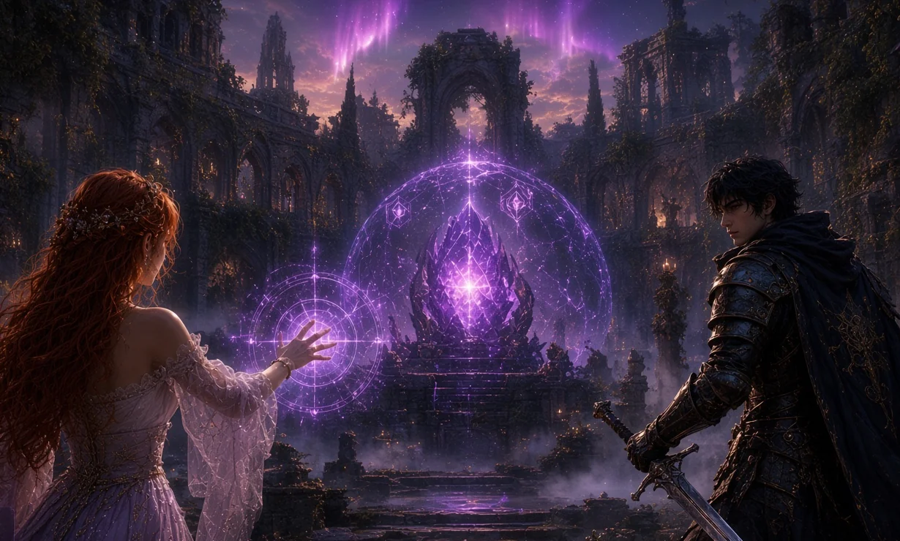
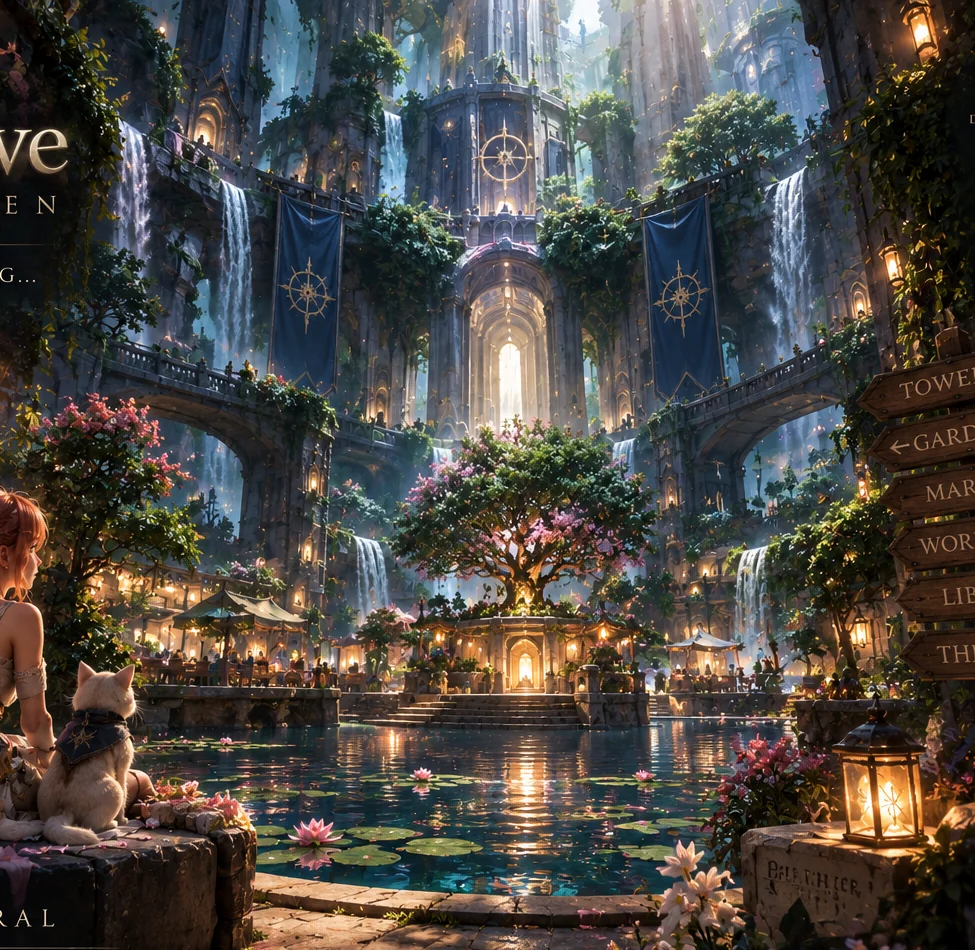

{kind=link}

THE CROSSING
Protect the Lantern
A light beyond the broken causeway. Recovered concept art from the earlier Crossing lineage.
The Crossing. The garden beyond it. The small places where a story can begin. Open a picture, see the whole original, and follow where it came from.
3 recovered artworks · originals and display variations

A light beyond the broken causeway. Recovered concept art from the earlier Crossing lineage.

Somewhere worth returning to. The existing tower-world artwork, with its original wording intact.

A pause beside the water. Part of the existing Anewgam visual family, not a portrait of Goober.
No pictures match that search. Try “garden” or clear the search.
Three artworks, not six new ones: display crops are variations of their originals. This is concept art, not proof of a running scene or a recovered video.
The three recovered Library originals are here with their display variants. Not every image shown or referenced in the conversation is public here. Context screenshots remain outside this display; other viewed references still need selection and provenance checks.
This is Goober’s public selection, not Steven’s private Art Plane. There is no automatic access to chat images, accounts, or another person’s pictures. Browsing here sends no pictures or search terms to Yandex or Grok.
Read the inclusion record ↗The next pass should make this feel like Goober’s world, not only a borrowed castle. These are queued briefs, not pictures already made.
A kinetic route through the Crossing: height, timing, clean momentum. An original composition, not Rocket League branding.
Salvaged tools, a machine mid-build, one useful invention. A home for Artificer play and real ideas.
A signal bridge and a place to return to. Belonging without forcing a fixed identity or role.
Sae-bird / Blubird stays a sketch. Explore alternatives before choosing a companion or a name.
Review the existing art lineage first. Select missing originals, write a compact visual brief, then create a coherent set of new scenes with source receipts. No new hosting or duplicate world state.
Open the full art plan ↗Hashes check bytes against the recorded manifest. They are not signatures, identity verification, or live Skein acceptance.
{kind=link}